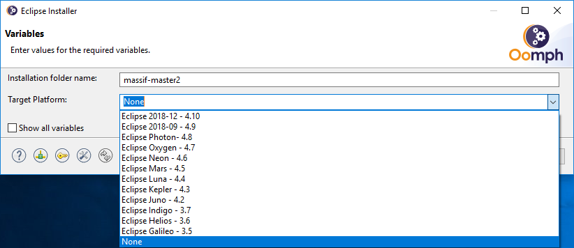
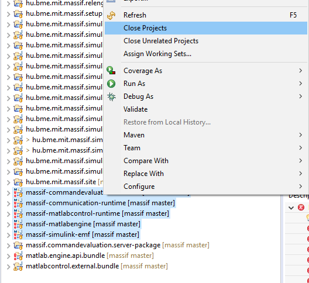

This page is intended for developers, contributors and anyone who wants to look at the source code in the development environment used for working on the tool.
Please note that this tutorial works for Windows systems. If you want to add description for other systems you can do it via pull requests on this file, or you can submit a new issue.
We recommend using Oomph for deploying a new Massif environment, because it’s awesome!
-
Download and run the Eclipse installer for your operating system.
-
On the first page choose advanced mode through the setting button in the right up corner.

-
On the next page choose Eclipse IDE for Eclipse Committers.
-
NOTE: VIATRA 2.0 has a conflicting dependency with Eclipse Parsley. For this reason, select a product that does not have Parsley added by default. Unfortunately, Eclipse Modeling SDK has Parsley installed.
-
-
On the projects page click the green plus button, select
Github Projectsenterhttps://raw.githubusercontent.com/viatra/massif/master/setup/hu.bme.mit.massif.setup/Massif.setupand click OK
-
Double click on Massif under
Github.com/<User>, you will see the master stream selected in the bottom table, click Next.
-
Note that checking the checkbox will add the optional subprojects (
Mylyn and Sonar) as well.
-
-
On the next page, fill out the missing variables.
-
Set the target platform
Eclipse Oxygen - 4.7orEclipse Photon - 4.8. -
On the next page you can see the tasks that will be executed.
-
Click finish and wait for the downloads and preparations to finish.
-
-
-
Once your new and shiny Eclipse starts, Oomph will once again pop up a wizard for completing the startup tasks.
-
Just click next and you will have your workspace prepared.
-
After it completes, click Finish.
-
You have to do some small steps to have your Massif working:
-
Close the following projects:
-
massif-commandevaluation-runtime -
massif-communication-runtime -
massif-matlabcontrol-runtime -
massif-matlabengine -
massif-simulink-emf
-
-
Right click on
matlab.engine.api.bundle/lib/engine.jarand open properties. Edit the location if its not perfect. Usually theengine.jaris located in the$MATLAB_ROOT/extern/engines/java/jarfolder. -
Open the
matlab.engine.api.bundle/META-INF/MANIFEST.MFfile, and delete the row containingcom.mathworks.util.osgi, -
Clean projects via
Project/Clean…with the clean all option.
-
-
-
Finally, if you want, do some additional optional steps:
-
In the local menu of Package Explorer, set Top level elements to Working sets and click OK on the presented list.
-
Open the following views (with Window/Show view):
-
Mylyn: Task lists, Builds (if you added the Mylyn and Sonar subproject)
-
Git: Git repositories
-
General: Properties
-
-